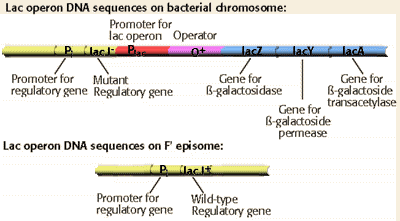

Molecular Genetics of Prokaryotes Problem Set
Problem 10: Phenotype of cells diploid for lac I gene
Tutorial to help answer the questionAn E. coli strain that is lac I- is conjugated with E. coli cells carrying an F' plasmid with the PI-lac I+ DNA sequence on the episome. How would the expression of the lac Z+ be regulated in the resulting cells that are diploid and heterozygous for the lac I gene (lac I+ on episome and lac I- on the bacterial chromosome)?
Tutorial
Cells diploid for lac I gene
As suggested by the diagram, the conjugated E. coli cells are diploid for the lac I gene. There is a mutant lac I- gene on the bacterial chromosome, and a wild-type lac I+ gene on the F'- DNA. The lac I+ gene on the F'- DNA is expressed constitutively, leading to the production of approximately 10 lac repressor protein molecules/cell. The repressor proteins can bind to the operator DNA sequence on the bacterial chromosome, and regulate the expression of the
lac Z- lac Y- lac A structural genes. Thus there is normal regulation of lactose metabolism.

Notice that the creation of a partial diploid cell line, containing both lac I+ and lac I- alleles can be used to demonstrate that the lac I+ allele is dominant.


University of Arizona
Revised: November 14, 2000
Contact the Development Team
http://biology.arizona.edu
All contents copyright © 1998-99. All rights reserved.